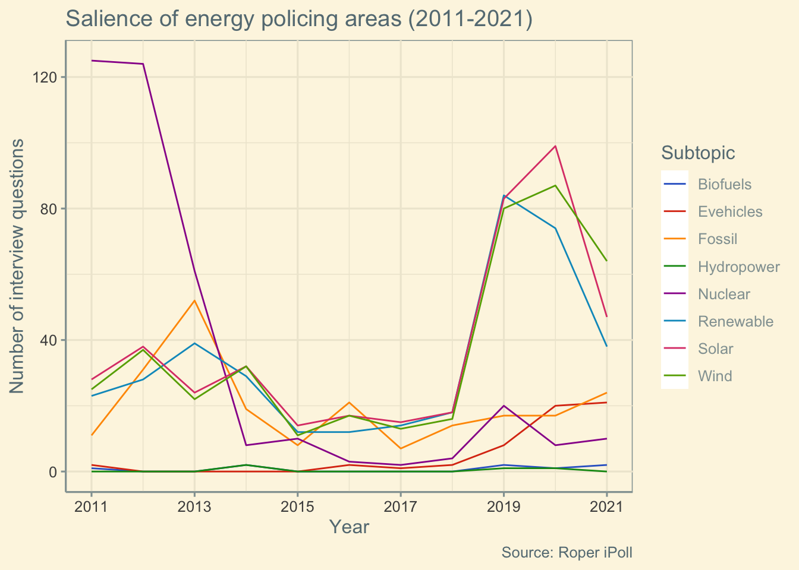
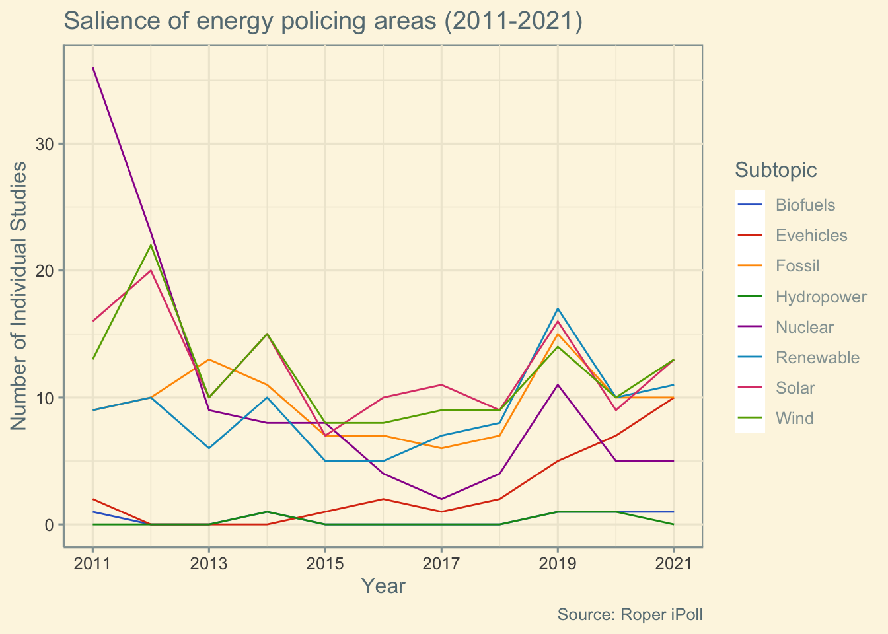
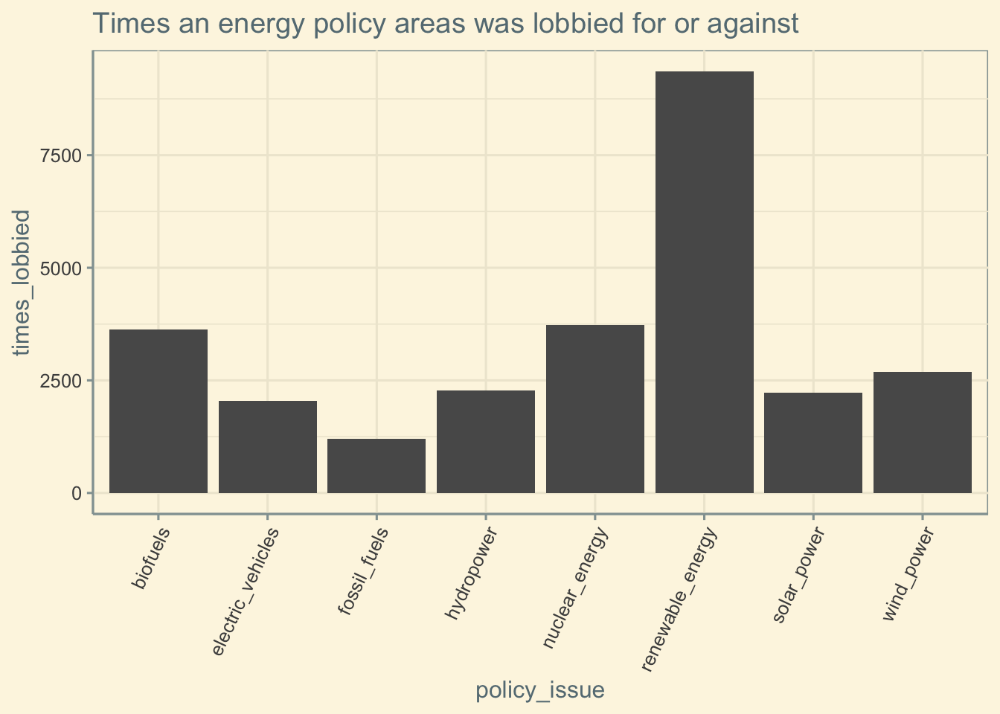
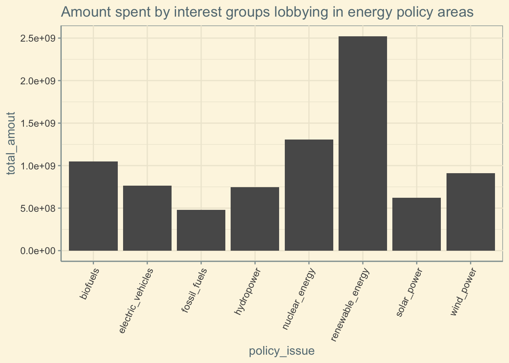

Exploratory Data Analysis
Salience & Nascence of energy policy areas
Salience
First, here are representations of the number of times a subtopic is mentioned in a poll question over the years. This is our proxy variable to salience.
Code
ggplot(salience_df, aes(x=Year))+
geom_line(aes(y=NbrQuestions, col=Subtopic))+
labs(title="Salience of energy policing areas (2011-2021)",
y = "Number of interview questions",
caption = "Source: Roper iPoll")+
scale_x_continuous(breaks = seq(from = 2011, to = 2021, by = 2))+
scale_color_gdocs()+
theme_solarized()
Measuring distinct studies instead of questions allows to avoid inflating salience in the case of a single study asking multiple questions about the same issue.
Code
ggplot(salience_df, aes(x=Year))+
geom_line(aes(y=NbrStudies, col=Subtopic))+
labs(title="Salience of energy policing areas (2011-2021)",
y = "Number of Individual Studies",
caption = "Source: Roper iPoll")+
scale_x_continuous(breaks = seq(from = 2011, to = 2021, by = 2))+
scale_color_gdocs()+
theme_solarized()
Nascence (TO DO)
A first method to measure nascence is to measure the number of years between now and the peak year.
CODE TO DO
A second method is to count the number of years since the subtopic reached a threshold of attention. Here this threshold is set to 5% of the total mentions of energy policy.
CODE TO DO
Lobbying in energy policy areas
Let’s first look at the total number of times each subtopic has been lobbied for or against in the last 10 years, and how much was spent on lobbying
Code
#New dataframe: for each subtopic, global salience & total times lobbied
grouped_areas_df <- dataframe_final %>%
#get variables of interest
select(times_lobbied, total_amout, policy_issue) %>%
#bring to one row per subtopic (summing times lobbied & total amount)
group_by(policy_issue) %>%
summarise_all(funs(sum))
ggplot(data = grouped_areas_df, aes(x=policy_issue, y = times_lobbied))+
geom_bar(stat = "identity", position = "dodge") +
theme_solarized()+
ggtitle("Times an energy policy areas was lobbied for or against")+
theme(axis.text.x = element_text(angle = 65, vjust = 1, hjust=1))
Code
ggplot(data = grouped_areas_df, aes(x=policy_issue, y = total_amout))+
geom_bar(stat = "identity", position = "dodge") +
ggtitle("Amount spent by interest groups lobbying in energy policy areas")+
theme_solarized()+
theme(axis.text.x = element_text(angle = 65, vjust = 1, hjust=1))